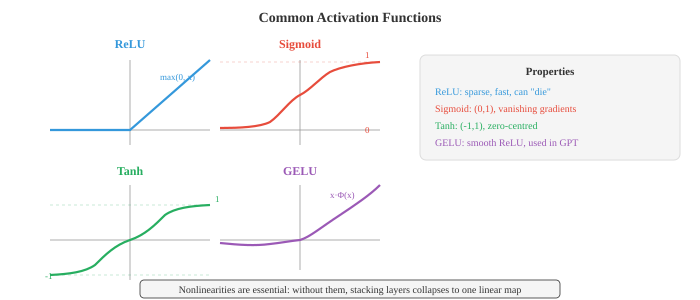
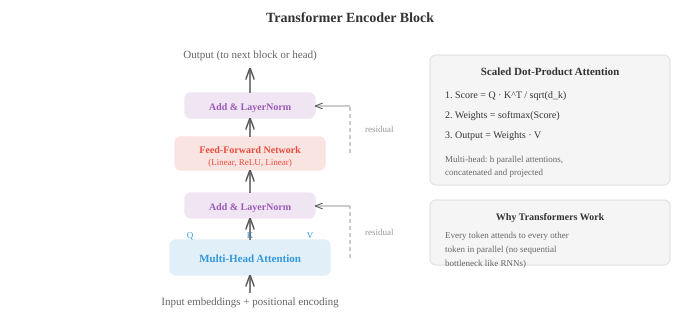

Deep Learning¶
Deep learning stacks nonlinear layers to build hierarchical representations that transform raw inputs into useful features automatically. This file covers MLPs, activation functions, backpropagation, CNNs, RNNs, LSTMs, attention, transformers, GANs, VAEs, diffusion models, and normalisation techniques
-
What makes a network "deep"? A shallow network has one hidden layer; a deep network has many. Depth lets the network build hierarchical representations, with early layers learning simple features (edges, tones) and later layers composing them into complex concepts (faces, sentences). This compositionality is what gives deep learning its power.
-
The simplest deep network is the multi-layer perceptron (MLP), also called a fully connected or dense network. Each layer computes:
-
Here \(W\) is a weight matrix (chapter 02), \(b\) is a bias vector, and \(\sigma\) is a nonlinear activation function. The output of one layer becomes the input to the next. Without the nonlinearity, stacking layers would be pointless: \(W_2(W_1 x) = (W_2 W_1)x\), which is just another linear transformation. This is exactly the matrix multiplication collapse from chapter 02.
-
Activation functions introduce the nonlinearity that makes depth meaningful.
-
ReLU (Rectified Linear Unit): \(\text{ReLU}(x) = \max(0, x)\). It is the most widely used activation. It is fast to compute, does not saturate for positive inputs, and produces sparse activations (many neurons output exactly zero). The downside: neurons with negative input always output zero, and if they get stuck there permanently, they "die" and stop learning.
-
Sigmoid: \(\sigma(x) = \frac{1}{1+e^{-x}}\), squashing inputs to \((0, 1)\). Useful for output layers in binary classification, but problematic in hidden layers because gradients vanish when the input is far from zero (the curve is nearly flat).
-
Tanh: \(\tanh(x) = \frac{e^x - e^{-x}}{e^x + e^{-x}}\), squashing to \((-1, 1)\). Zero-centred (unlike sigmoid), which helps gradient flow, but still suffers from vanishing gradients at extremes.
-
GELU (Gaussian Error Linear Unit): \(\text{GELU}(x) = x \cdot \Phi(x)\), where \(\Phi\) is the standard normal CDF. It is a smooth approximation to ReLU that allows small negative values through. GELU is the default in GPT and BERT.
-
Swish: \(\text{Swish}(x) = x \cdot \sigma(x)\), another smooth gate. Similar to GELU in practice.

-
A dense layer with \(d_{\text{in}}\) inputs and \(d_{\text{out}}\) outputs has \(d_{\text{in}} \times d_{\text{out}} + d_{\text{out}}\) parameters (weights plus biases). The matrix multiply \(Wx\) is just matrix-vector multiplication from chapter 02. In a batch setting, the input is a matrix \(X\) of shape \((B, d_{\text{in}})\) and the output is \(XW^T + b\) of shape \((B, d_{\text{out}})\).
-
The universal approximation theorem states that a single hidden layer with enough neurons can approximate any continuous function on a compact domain to arbitrary accuracy. This sounds like depth should not matter, but the catch is "enough neurons." In practice, deep networks can represent the same functions with exponentially fewer parameters than shallow ones. Depth gives you efficiency, not just expressiveness.
-
As networks get deeper, two gradient pathologies emerge. Vanishing gradients: when gradients pass through many layers (via the chain rule, chapter 03), they get multiplied by many factors. If these factors are consistently less than 1 (as happens with sigmoid and tanh saturating), the gradient shrinks exponentially toward zero. Early layers barely learn. Exploding gradients: if factors are consistently greater than 1, gradients grow exponentially, causing numerical overflow and unstable training.
-
Solutions to vanishing/exploding gradients:
- Use ReLU or GELU activations (gradient is 1 for positive inputs, no saturation)
- Careful weight initialisation
- Normalisation layers
- Residual connections (skip connections)
-
Gradient clipping (for exploding gradients): cap the gradient norm at a maximum value
-
Weight initialisation matters because it determines the scale of activations and gradients at the start of training. If weights are too large, activations explode; too small, they vanish.
-
Xavier (Glorot) initialisation sets weights from a distribution with variance \(\frac{2}{d_{\text{in}} + d_{\text{out}}}\). This keeps the variance of activations roughly constant across layers, assuming linear or tanh activations.
-
He (Kaiming) initialisation uses variance \(\frac{2}{d_{\text{in}}}\), which is calibrated for ReLU activations (since ReLU zeros out half the activations, you need double the variance to compensate).
-
Normalisation layers stabilise training by ensuring that the inputs to each layer have consistent statistics (roughly zero mean, unit variance).
-
Batch Normalisation (BatchNorm) normalises across the batch dimension: for each channel/feature, compute the mean and variance across all samples in the mini-batch, then normalise. It adds learnable scale (\(\gamma\)) and shift (\(\beta\)) parameters so the network can undo the normalisation if needed:
-
BatchNorm has a problem: it depends on the batch size. With very small batches, the statistics are noisy. At inference time, you use running averages instead of batch statistics, which creates a train/test discrepancy.
-
Layer Normalisation (LayerNorm) normalises across the feature dimension for each individual sample. It does not depend on other samples in the batch, making it the standard choice for transformers and recurrent networks.
-
Instance Normalisation normalises across spatial dimensions for each sample and each channel independently. It is popular in style transfer.
-
Group Normalisation splits channels into groups and normalises within each group. It is a compromise between LayerNorm and InstanceNorm.

-
Dropout is a regularisation technique that randomly zeroes out a fraction \(p\) of neurons during training. This forces the network to not rely on any single neuron, encouraging redundant representations. At test time, all neurons are active. Inverted dropout scales activations by \(\frac{1}{1-p}\) during training so that no scaling is needed at test time. This is the standard implementation.
-
Convolutional Neural Networks (CNNs) exploit spatial structure. Instead of connecting every input to every output (as in dense layers), a convolutional layer slides a small filter (kernel) across the input, computing a dot product at each position. The same filter weights are shared across all positions, which drastically reduces parameters and builds in translation invariance.
-
The convolution operation for a 2D input with filter \(K\) of size \(k \times k\):

-
The output size depends on three hyperparameters. Stride controls how many pixels the filter moves between positions (stride 2 halves the spatial dimensions). Padding adds zeros around the input border ("same" padding preserves spatial size, "valid" padding does not). The output size formula: \(\text{out} = \lfloor (\text{in} - k + 2p) / s \rfloor + 1\).
-
Pooling layers downsample feature maps. Max pooling takes the maximum value in each window; average pooling takes the mean. Pooling reduces spatial dimensions while keeping the most important information.
-
Dilated convolutions insert gaps between filter elements, increasing the receptive field without increasing parameters. A dilation rate of 2 means the 3x3 filter covers a 5x5 area.
-
1x1 convolutions are convolutions with a 1x1 filter. They do not look at spatial neighbours; instead, they mix information across channels. Think of them as applying a dense layer at every spatial position. They are used to change the number of channels cheaply.
-
Skip connections (residual connections) let the input bypass one or more layers: \(\text{output} = F(x) + x\). The layer only needs to learn the residual \(F(x) = \text{output} - x\), which is easier when the optimal transformation is close to identity. ResNets (Residual Networks) stacked over 100 layers using this trick, solving the degradation problem where deeper networks performed worse than shallower ones.
-
CNNs build a feature hierarchy. Early layers detect edges and textures. Middle layers combine these into parts (eyes, wheels). Late layers recognise whole objects. Each layer's receptive field (the region of the input it can "see") grows with depth.
-
Embeddings map discrete tokens (words, characters, item IDs) to dense vectors. An embedding layer is just a lookup table: a matrix \(E\) of shape (vocabulary size, embedding dimension). Looking up token \(i\) means selecting row \(i\) of \(E\). This is equivalent to multiplying by a one-hot vector, which is just a special case of matrix-vector multiplication (chapter 02). Embeddings are learned during training, so similar tokens end up with similar vectors.
-
Tokenisation is the process of converting raw text into a sequence of tokens. Word-level tokenisation splits on spaces but cannot handle unseen words. Subword tokenisation (BPE, WordPiece, SentencePiece) breaks text into frequent subword units, balancing vocabulary size and coverage. The word "unhappiness" might become ["un", "happiness"] or ["un", "happ", "iness"].
-
Recurrent Neural Networks (RNNs) process sequences one element at a time, maintaining a hidden state that carries information forward:
-
The hidden state \(h_t\) is a compressed summary of everything the network has seen up to time \(t\). The same weights \(W_h\) and \(W_x\) are shared across all time steps (weight sharing, like CNNs share spatial weights).
-
Vanilla RNNs struggle with long sequences because of vanishing gradients: the gradient signal from step \(t\) to step \(t - k\) passes through \(k\) multiplications by \(W_h\), and it shrinks (or explodes) exponentially.
-
LSTM (Long Short-Term Memory) solves this by introducing a separate cell state \(c_t\) that flows through time with minimal interference. Three gates control what information enters, leaves, and persists:
-
The forget gate decides what to erase from the cell state: \(f_t = \sigma(W_f [h_{t-1}, x_t] + b_f)\)
- The input gate decides what new information to write: \(i_t = \sigma(W_i [h_{t-1}, x_t] + b_i)\), with candidate values \(\tilde{c}_t = \tanh(W_c [h_{t-1}, x_t] + b_c)\)
- The cell state updates: \(c_t = f_t \odot c_{t-1} + i_t \odot \tilde{c}_t\)
- The output gate decides what to expose: \(o_t = \sigma(W_o [h_{t-1}, x_t] + b_o)\), and \(h_t = o_t \odot \tanh(c_t)\)

-
The cell state acts like a conveyor belt: information can flow unchanged across many time steps (the forget gate stays close to 1), which solves the vanishing gradient problem for long-range dependencies.
-
GRU (Gated Recurrent Unit) simplifies the LSTM by merging the cell state and hidden state into one, and using two gates instead of three: an update gate (combines forget and input) and a reset gate. GRUs have fewer parameters and often perform comparably to LSTMs.
-
The fundamental limitation of RNNs (including LSTMs) is sequential processing: you must process token 1 before token 2 before token 3. This prevents parallelisation and creates an information bottleneck, as all context must squeeze through the fixed-size hidden state.
-
Attention solves both problems. Instead of compressing the entire input into a fixed vector, attention lets the model look back at all input positions and decide which ones are relevant for the current output.
-
The modern formulation uses queries, keys, and values (Q, K, V). Think of it like a library search: you have a query (what you are looking for), keys (labels on each book), and values (the actual book contents). You compare your query against all keys to figure out which values to retrieve.
-
Scaled dot-product attention:
-
\(QK^T\) computes the similarity between every query and every key. This is a matrix multiply (chapter 02), and the entries are dot products, which measure cosine similarity (chapter 01). Dividing by \(\sqrt{d_k}\) prevents the dot products from becoming too large (which would make the softmax saturate and produce near-one-hot distributions with vanishing gradients). The softmax converts similarities to a probability distribution. Multiplying by \(V\) produces a weighted combination of values.
-
Multi-head attention runs \(h\) parallel attention operations, each with different learned projections of Q, K, and V. This lets the model attend to information from different representation subspaces simultaneously. One head might attend to syntactic relationships while another attends to semantic ones. The outputs are concatenated and projected:
- The Transformer architecture (Vaswani et al., 2017) is built entirely from attention and feed-forward layers, with no recurrence. The encoder block repeats: multi-head self-attention, add and layer-norm, feed-forward network, add and layer-norm. The decoder block adds a masked self-attention (preventing the model from seeing future tokens) and a cross-attention layer that attends to the encoder output.

- Positional encoding is necessary because attention is permutation-equivariant, meaning it treats the input as a set, not a sequence. Without position information, "the cat sat on the mat" and "the mat sat on the cat" would be identical. The original Transformer uses sinusoidal positional encodings:
-
Each position gets a unique vector that the model can use to distinguish positions. Modern models often use learned positional embeddings or relative positional encodings (RoPE, ALiBi) instead.
-
Transformers process all tokens in parallel (the self-attention matrix \(QK^T\) is computed in one matrix multiply), which makes them much faster to train than RNNs on modern hardware. The tradeoff is that self-attention is \(O(n^2)\) in sequence length (every token attends to every other), while RNNs are \(O(n)\). This is why long-context models require special attention variants (sparse attention, linear attention, flash attention).
-
Vision Transformers (ViT) apply the Transformer to images by splitting the image into fixed-size patches (e.g., 16x16), flattening each patch into a vector, and treating the patches as a sequence of tokens. A learnable [CLS] token is prepended, and its final representation is used for classification. Despite having no convolutional inductive biases, ViTs match or surpass CNNs when trained on enough data.
-
MLP-Mixer is an even simpler architecture that replaces both attention and convolution with MLPs. It alternates between "token-mixing" MLPs (applied across spatial positions) and "channel-mixing" MLPs (applied across features). It performs competitively, suggesting that the key insight of modern architectures is not attention itself, but rather efficient mixing of information across tokens and features.
-
Autoencoders learn compressed representations by training a network to reconstruct its own input. The encoder maps the input to a lower-dimensional bottleneck (the latent code), and the decoder maps it back:
-
The bottleneck forces the network to learn the most important features. Autoencoders are used for dimensionality reduction, denoising (train on noisy input, reconstruct clean output), and anomaly detection (high reconstruction error signals an unusual input).
-
Variational Autoencoders (VAEs) add a probabilistic twist. Instead of encoding to a single point \(z\), the encoder outputs the parameters of a distribution (mean \(\mu\) and variance \(\sigma^2\) of a Gaussian). The latent code is sampled from this distribution: \(z = \mu + \sigma \odot \epsilon\), where \(\epsilon \sim \mathcal{N}(0, I)\). This reparameterisation trick makes the sampling differentiable so gradients can flow through.
-
The VAE loss has two terms:
- The KL divergence term (from chapter 05) pushes the learned posterior \(q(z|x)\) toward the prior \(p(z) = \mathcal{N}(0, I)\), ensuring the latent space is smooth and well-structured. You can then sample from the prior and decode to generate new data. This is what makes VAEs generative models.
Coding Tasks (use CoLab or notebook)¶
-
Build a simple MLP from scratch in JAX. Train it on a 2D classification problem (e.g., concentric circles) and visualise the decision boundary.
import jax import jax.numpy as jnp import matplotlib.pyplot as plt from sklearn.datasets import make_circles # Data X, y = make_circles(n_samples=500, noise=0.1, factor=0.5, random_state=42) X, y = jnp.array(X), jnp.array(y, dtype=jnp.float32) # Initialise a 2-layer MLP: 2 -> 16 -> 16 -> 1 def init_params(key): k1, k2, k3 = jax.random.split(key, 3) return { 'W1': jax.random.normal(k1, (2, 16)) * 0.5, 'b1': jnp.zeros(16), 'W2': jax.random.normal(k2, (16, 16)) * 0.5, 'b2': jnp.zeros(16), 'W3': jax.random.normal(k3, (16, 1)) * 0.5, 'b3': jnp.zeros(1), } def forward(params, x): h = jnp.maximum(0, x @ params['W1'] + params['b1']) # ReLU h = jnp.maximum(0, h @ params['W2'] + params['b2']) # ReLU logit = (h @ params['W3'] + params['b3']).squeeze() return jax.nn.sigmoid(logit) def loss_fn(params, X, y): pred = forward(params, X) return -jnp.mean(y * jnp.log(pred + 1e-7) + (1 - y) * jnp.log(1 - pred + 1e-7)) grad_fn = jax.jit(jax.grad(loss_fn)) params = init_params(jax.random.PRNGKey(0)) lr = 0.1 for step in range(2000): grads = grad_fn(params, X, y) params = {k: params[k] - lr * grads[k] for k in params} # Plot decision boundary xx, yy = jnp.meshgrid(jnp.linspace(-2, 2, 200), jnp.linspace(-2, 2, 200)) grid = jnp.column_stack([xx.ravel(), yy.ravel()]) zz = forward(params, grid).reshape(xx.shape) plt.figure(figsize=(7, 6)) plt.contourf(xx, yy, zz, levels=[0, 0.5, 1], alpha=0.3, colors=['#e74c3c', '#3498db']) plt.scatter(X[y==0,0], X[y==0,1], c='#e74c3c', s=10, label='Class 0') plt.scatter(X[y==1,0], X[y==1,1], c='#3498db', s=10, label='Class 1') plt.title("MLP Decision Boundary on Concentric Circles") plt.legend(); plt.grid(alpha=0.3); plt.show() acc = jnp.mean((forward(params, X) > 0.5) == y) print(f"Accuracy: {acc:.2%}") -
Implement 1D convolution from scratch. Apply a simple edge-detection filter to a signal and compare with the built-in
jnp.convolve.import jax.numpy as jnp import matplotlib.pyplot as plt def conv1d(signal, kernel): """1D convolution (valid mode) from scratch.""" n, k = len(signal), len(kernel) output = jnp.zeros(n - k + 1) for i in range(n - k + 1): output = output.at[i].set(jnp.sum(signal[i:i+k] * kernel)) return output # Create a signal with a step function t = jnp.linspace(0, 4, 200) signal = jnp.where(t < 1, 0.0, jnp.where(t < 2, 1.0, jnp.where(t < 3, 0.5, 1.5))) # Edge detection kernel edge_kernel = jnp.array([-1.0, 0.0, 1.0]) # Our implementation vs built-in our_output = conv1d(signal, edge_kernel) jnp_output = jnp.convolve(signal, edge_kernel, mode='valid') fig, axes = plt.subplots(3, 1, figsize=(10, 6), sharex=True) axes[0].plot(t, signal, color='#3498db', linewidth=1.5) axes[0].set_title("Original Signal"); axes[0].set_ylabel("Value") axes[1].plot(t[:len(our_output)], our_output, color='#e74c3c', linewidth=1.5) axes[1].set_title("After Edge Detection (our conv1d)"); axes[1].set_ylabel("Value") axes[2].plot(t[:len(jnp_output)], jnp_output, color='#27ae60', linewidth=1.5, linestyle='--') axes[2].set_title("After Edge Detection (jnp.convolve)"); axes[2].set_ylabel("Value") axes[2].set_xlabel("t") plt.tight_layout(); plt.show() print(f"Outputs match: {jnp.allclose(our_output, jnp_output)}") -
Implement scaled dot-product attention from scratch. Compute attention weights for a small example and visualise the attention matrix as a heatmap.
import jax import jax.numpy as jnp import matplotlib.pyplot as plt def scaled_dot_product_attention(Q, K, V): """Scaled dot-product attention.""" d_k = Q.shape[-1] scores = Q @ K.T / jnp.sqrt(d_k) weights = jax.nn.softmax(scores, axis=-1) output = weights @ V return output, weights # Example: 4 tokens, embedding dim 8 key = jax.random.PRNGKey(42) k1, k2, k3 = jax.random.split(key, 3) seq_len, d_model = 4, 8 Q = jax.random.normal(k1, (seq_len, d_model)) K = jax.random.normal(k2, (seq_len, d_model)) V = jax.random.normal(k3, (seq_len, d_model)) output, weights = scaled_dot_product_attention(Q, K, V) print(f"Q shape: {Q.shape}") print(f"Attention weights shape: {weights.shape}") print(f"Output shape: {output.shape}") print(f"\nAttention weights (rows sum to 1):") print(weights) print(f"Row sums: {weights.sum(axis=-1)}") # Visualise attention fig, ax = plt.subplots(figsize=(5, 4)) im = ax.imshow(weights, cmap='Blues', vmin=0, vmax=1) ax.set_xlabel("Key position"); ax.set_ylabel("Query position") ax.set_title("Attention Weights") tokens = ['tok 0', 'tok 1', 'tok 2', 'tok 3'] ax.set_xticks(range(4)); ax.set_xticklabels(tokens) ax.set_yticks(range(4)); ax.set_yticklabels(tokens) for i in range(4): for j in range(4): ax.text(j, i, f"{weights[i,j]:.2f}", ha='center', va='center', fontsize=10) plt.colorbar(im); plt.tight_layout(); plt.show() -
Build a simple autoencoder that compresses 2D data through a 1D bottleneck and reconstructs it. Visualise the latent space and reconstructions.
import jax import jax.numpy as jnp import matplotlib.pyplot as plt from sklearn.datasets import make_moons # Data X, _ = make_moons(n_samples=500, noise=0.05, random_state=42) X = jnp.array(X) # Autoencoder: 2 -> 8 -> 1 -> 8 -> 2 def init_ae(key): k1, k2, k3, k4 = jax.random.split(key, 4) return { 'enc_W1': jax.random.normal(k1, (2, 8)) * 0.5, 'enc_b1': jnp.zeros(8), 'enc_W2': jax.random.normal(k2, (8, 1)) * 0.5, 'enc_b2': jnp.zeros(1), 'dec_W1': jax.random.normal(k3, (1, 8)) * 0.5, 'dec_b1': jnp.zeros(8), 'dec_W2': jax.random.normal(k4, (8, 2)) * 0.5, 'dec_b2': jnp.zeros(2), } def encode(p, x): h = jnp.tanh(x @ p['enc_W1'] + p['enc_b1']) return h @ p['enc_W2'] + p['enc_b2'] def decode(p, z): h = jnp.tanh(z @ p['dec_W1'] + p['dec_b1']) return h @ p['dec_W2'] + p['dec_b2'] def ae_loss(p, X): z = encode(p, X) X_hat = decode(p, z) return jnp.mean((X - X_hat) ** 2) grad_fn = jax.jit(jax.grad(ae_loss)) params = init_ae(jax.random.PRNGKey(0)) lr = 0.01 for step in range(3000): grads = grad_fn(params, X) params = {k: params[k] - lr * grads[k] for k in params} z = encode(params, X) X_hat = decode(params, z) fig, axes = plt.subplots(1, 2, figsize=(12, 5)) axes[0].scatter(X[:,0], X[:,1], c=z.squeeze(), cmap='viridis', s=10) axes[0].set_title("Original Data (coloured by latent code)") axes[1].scatter(X_hat[:,0], X_hat[:,1], c=z.squeeze(), cmap='viridis', s=10) axes[1].set_title("Reconstruction from 1D bottleneck") for ax in axes: ax.set_aspect('equal'); ax.grid(alpha=0.3) plt.tight_layout(); plt.show() print(f"Reconstruction MSE: {ae_loss(params, X):.4f}")